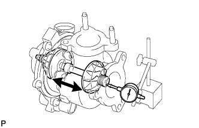
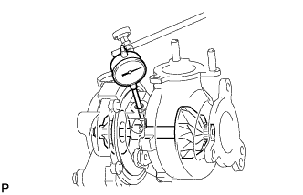

EXHAUST MANIFOLD W/ TURBOCHARGER > INSPECTION |
| 1. INSPECT AXIAL PLAY OF TURBINE SHAFT |
 |
Insert the needle of a dial indicator into the intake side of the turbine shaft.
Move the turbine shaft in an axial direction and measure the axial play of the turbine shaft using the dial indicator.
| 2. INSPECT RADIAL PLAY OF TURBINE SHAFT |
 |
Insert the needle of a dial indicator into the oil outlet hole, and set it in the center of the turbine shaft.
Move the turbine shaft in a radial direction and measure the radial play of the turbine shaft.
| 3. INSPECT EXHAUST MANIFOLD RH AND LH |
 |
Using a precision straightedge and feeler gauge, measure the warpage of the contact surface between the exhaust manifold and cylinder head.